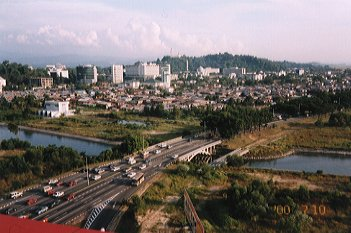
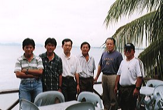
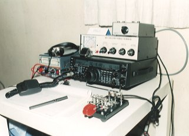
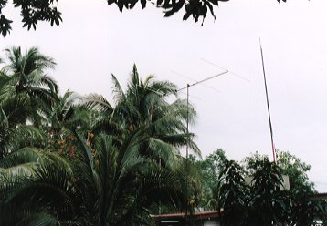

|
【マレーシアの免許制度】
マレーシアのアマチュア局の免許はClass AとClass Bの2種類です。
Class Aはアマチュア局に許可されている運用範囲の全て、Class Bは電信の試験が無い代わりにVHF(2m帯以上)帯だけの運用に限定されています。
個人のアマチュア局は、"9M2GY"や"9M6JU"のようにサフィックスが2桁のコールサインで、
Class Aには"9M*"のプリフィックスが、Class Bには"9W*"のプリフィックスが割り当てられています。
Class Bの局は、電信の試験に合格して"Class A"に昇格すると、コールサインは9Wから9Mに変更されます。
このため、9Wで割り当てたサフィックスは9Mでは割り当てられず"空き"になっています。
当然、同じサフィックスが9Wと9Mの両方に割り当てられることはありません。
クラブ局のコールサインは通常"9M6AAC"、"9M6SMC"のように3桁のサフィックスの最後にClub局を意味する"C"が付されています。
3桁のコールサインでも9M2JKL、9M6BAAのようにラストレターに"C"の付かない局もありますが、
これは9M0C、9M0Fなど1桁のサフィックスの局と同じ"記念局"や"特別局"として許可されたクラブ局です。
短期滞在の外国人に与えられる免許は「9M6/JA****」のように、
自国のコールサインの前に"9M*/"を付したものが割り当てられています。臨時の免許期限は3ヶ月です。
マレーシアはマレー半島部の9M2・西マレーシア(Peninsular Malaysia=首都クアラ・ルンプール)とボルネオ島の9M6・Sabah州(州都=コタ・キナバル)、
9M8・Sarawak州(州都=クチン)の東マレーシアに分かれていて、
以前はアマチュア局の免許も9M2、9M6、9M8の3ヶ所の"監督官庁"がそれぞれ独自に許可を与えていました。
現在はCMC(*2)に免許関係が移管され首都のクアラルンプールで一括処理されています。
東マレーシアのSabah州(9M6)では、2000年当時に"9M6PWT"や"9M6KET"などの様に3桁のサフィックスの最後に"Ｔ"(テンポラリー=Temporary=臨時の意味)の付くコールサインを割り当てていましたが、
マレーシアの免許関係の担当がJTM(*1)からCMC(*2)に移管されたのに伴い、
2001年から「9M6/*****」の方式に戻される事になりました。
日本人がマレーシアから運用するためには申請書に日本の免許状(従事者免許証ではなく、
コールサインが確認出来る免許状)とパスポートのコピー、身分証明(公証人の証明印)が必要です。
クアラルンプールのCMCが免許の発給を担当する様になってから免許取得に日数が掛かるため、
短期の滞在者が個人のコールサインで運用するのは難しくなってしまいました。
CMCに移管された2000年には免許関係の手数料も変更され、現在(2002年)は開局申請料RM60(約1,800円)、
免許料RM9(約270円)になりました。
日本から比べると金額的に安いように思われますが、日本より物価の安いマレーシアでは、
これでもかなりの"負担"となっています。
JTM(*1) Jabatan Telekom Malaysia
CMC(*2) Communications and Multimedia Commission)
RM(マレーシア・リンギット、1RM=約30円)

コタ キナバルの市街地(2000年7月)
◎ Malaysia Amateur Band
1.8MHz Band: 1,800KHz-2,000KHz (25W PEP)
3.5MHz Band: 3,500KHz-3,900KHz (400W PEP) A1A,A2A,A3E,R3E,J3E,F1A,F2A,F3E
7MHz Band: 7,000KHz-7,100KHz (400W PEP) A1A,A2A,A3E,R3E,J3E,F1A,F2A,F3E
10MHz Band: 10,100KHz-10,150KHz (400W PEP) A1A,A2A,A3E,R3E,J3E,F1A,F2A,F3E
14MHz Band: 14,000KHz-14,350KHz (400W PEP) A1A,A2A,A3E,R3E,J3E,F1A,F2A,F3E
18MHz Band: 18,068KHz-18,168KHz (400W PEP) A1A,A2A,A3E,R3E,J3E,F1A,F2A,F3E
21MHz Band: 21,000KHz-21,450KHz (400W PEP) A1A,A2A,A3E,R3E,J3E,F1A,F2A,F3E
24MHz Band: 24,890KHz-24,990KHz (400W PEP) A1A,A2A,A3E,R3E,J3E,F1A,F2A,F3E
28MHz Band: 28,00MHz-29,70MHz (400W PEP) A1A,A2A,A3E,R3E,J3E,F1A,F2A,F3E
50MHz Band: 50,00MHz-54,00MHz (400W PEP) A1A,A2A,A3E,R3E,J3E,F1A,F2A,F3EZ
144MHz Band: 144,00MHz-148,00MHz (400W PEP) A1A,A2A,A3E,R3E,J3E,F1A,F2A,F3E
【9M6JUの免許取得】
1998年2月、スプラトリーで9M0Cを運用した帰途、9M6/JA1RJUの免許申請を行ったサバ(SABAH)州のJTM(Jabatan Telekom Malaysia)に立ち寄り、
9M6での"恒久的"な局免許の申請を打診したところ、申請書が揃えば「9M6」の個人コールが貰えそうな感触を得ました。
さっそく、担当者から免許申請書一式を貰い、帰国前の短い時間を割いて書類作成に走り廻りました。提出する申請書は4枚。
これに日本の無線局免許状とパスポートのコピーです。
当時は書類も外国人向けには作られていないものもあり、一部はマレー語(最近の書類は英語が併記されている)でした。
マレー語の書類は、仕事の関係で申請書を書き慣れている9M6GYのXYL・9M6JY(Stella)が引き受けてくれました。
まず最初に局の申請書に添付する公的機関の「身元証明書」を貰うことでした。
パスポートと申請書(誓約書)を持って、市内の中心街にある"代書屋"に出向き、
担当者から申請書にサインと直径5cmほどのローヤルの証明印を貰いました。ここでの手数料はRM4(約120円)です。
この書類一式をJTM(現在はCMC)に持参、開局申請料RM60(約1,800円)、免許料RM9(約270円)を支払い、申請は終了です。

局の申請書類の作成に協力してくれた
9M6JY(Stella)
【9M6JU申請までの手続き】
申請書には希望するコールサインを書き込む欄があります。地元の局にたずねて、未使用と思われるコールサインを書き込みます。
私は「9M6JU」を第一希望の欄に書き込みました。
マレーシアでは自分のイニシアルをコールサインとして申請する局が多いのですが、幸いなことに"Ｕ"で始まるイニシアルの名前は少ないのか、
空いているようでした。「9M6JU」の割り当ては問題なさそうでしたが、一応イニシアルの「9M6KO」、と「9M6RJU」を第二、第三希望として書き込みました。
申請書類一式をJTMに提出して帰国しました。
この時点では申請書は完璧と思われたのですが、実は帰国してからがいろいろ大変でした。
数日してJTMの担当者から、免許申請についての問い合わせがE-Mailで届きました。
内容は、先に提出した申請書に加えて、新たに日本の「地元クラブの証明書」の提出と、
マレーシア・サバ州の「クラブの会員」になる事が条件というものでした。
さっそく日本の"地元クラブ"として、JARLから会員証明書を発行してもらいました。
マレーシアのクラブの入会は、JTMから紹介されたSARS(Sabah Amateur Radio Society)の担当者、9M6LKとE-Mailを通じて、
入会の手続きをお願いすることにしました。SARSは現在、会員180人ほどのサバ州最大のアマチュア無線局の団体です。
サバ州にはこの他にBARS(Borneo Amateur Radio Society)という団体があり、こちらの会員数は約40人程度とのこと。
SARSに提出した書類はJTMへの申請書よりも多く、途中で投げ出したくなる心境でしたが、担当者の9M6LKから「面倒でも投げ出したりしないで、
最後まで続ける様に...」、と、こちらの気持ちを見透かしたような？Mailに"励まされ"ながら必要書類を準備して送付しました。
こうしてようやく6月中旬にSARSのTransmitting Member(Out Station)として登録されました。
SARSの書類上ではまだコールサインは、自国のコールサインを付けた「9M6/JA1RJU」のままでした。
希望しているのは「9M6JU」なのだが...。
9月の上旬にようやく、9M6LKからSARSの会員証(IDカード)と共に局の免許状が送られてきました。
JTMはマレーシアの常置場所として申請した個人の住所(メーリングアドレス)宛ではなく、免許はSARSを経由して送ってきました。
この8月5日付の免許状のコールサインの欄には、待ちに待った"9M6JU"がタイプされていました。
後で聞いた話では、マレーシアでは1998年から、外国人には「9M*/*****」式のコールサインで免許しているとの事でしたので、
この時期に"9M6JU"のコールサインを貰えたのはラッキーだったようです。
マレーシアの局免許の有効期限は、従来は一年間(1月1日から12月31日まで)で、
毎年更新料(RM30=900円)を添えて年末に手続きをしていましたが、2000年に管轄がJTMからCMCに変更になって、
2001年の申請から3ヶ月、1年、2年、5年間から選べるようになりました。
◎ 局免許の更新申請料(2001年から実施)
a)1年間:RM60+(A licence=RM36、 B licence=RM24)
b)2年間:RM60+(A licence=RM36×2、B licence=RM24×2)
c)5年間:RM60+(A licence=RM36×5、B licence=RM24×5)
* 臨時(3ヶ月:RM60+RM9)


9M6JUの初運用。ローカルの各局が集まってアンテナを設置してくれた
(左から)9W6EI、9M6LW、9M6LK、9M6GY、9M6JU(JA1RJU)、9M6SU


FT-847(RIGの上はHFアンテナチューナー・MFJ-948)/4el HB9CVとG5RVアンテナ
◎ SARS 2 Meter Repeater
9M6RBB(Bukit Bendera,Kota Kinabalu)
145.650 MHz(RX)
145.050 MHz(TX)
Output Power 10W
Elevation 100meters
Keeper 9W6RL(Mr Long Sung Loo)
9M6RGK(Gunung Kinabalu,Ranau)
147.900MHz(RX)
147.300MHz(TX)
Output Power 18W
Elevation 3,000meters
Keeper 9W6BC(Mr.Martin Chiu)
|